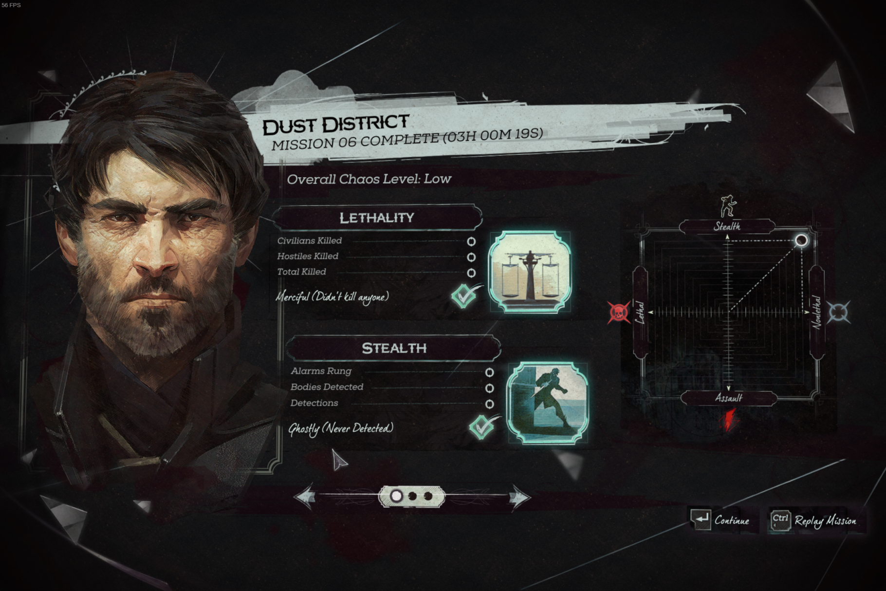

Cheating in Dishonored 2 using Prolog
Posted on February 4, 2025 by Jacob Walters.
Solving the Jindosh Riddle through constraint programming and a Prolog interpreter.
There’s a level in the excellent first person stealth game Dishonored 2, where for various reasons, you need to break into the mansion of a certain Aramis Stilton. But this mansion is protected by a door, and this door is protected by a lock devised by the great inventor Kirin Jindosh.
The lock is no ordinary lock. There isn’t a keyhole; instead it’s effectively a combination lock.
There’s also an accompanying riddle, which gives clues to the combination:

The lock proves too complicated for lockpickers living in the game’s world; unfortunately, Jindosh didn’t account for assassins that have access to a Prolog interpreter.
The Setup
The puzzle is effectively a zebra puzzle; a logic puzzle where you’re given a set of facts, a set of constraints, and you’re supposed to unify to find a solution to the constraints.
In our case, there are five diners at the dinner party, and five properties that we care about for each diner: their name; the colour of their clothes; what they’re drinking; where they’re from; and what heirloom they’ve brought.
Additionally, we care about the order in which they’re sitting; we can model this as a list with exactly five elements. Prolog comes with syntactic sugar for lists, but in this case it’s a little easier to roll our own since we want lists of exactly 5 elements:
% exists(A, Xs) states that A is an element of Xs
exists(A, list(A, _, _, _, _)).
exists(A, list(_, A, _, _, _)).
exists(A, list(_, _, A, _, _)).
exists(A, list(_, _, _, A, _)).
exists(A, list(_, _, _, _, A)).
% leftOf(L, R, Xs) states that L and R are elements of Xs, and L appears directly to the left of R.
leftOf(L, R, list(L, R, _, _, _)).
leftOf(L, R, list(_, L, R, _, _)).
leftOf(L, R, list(_, _, L, R, _)).
leftOf(L, R, list(_, _, _, L, R)).
% first(A, Xs) states that A is the first element of Xs
first(A, list(A, _, _, _, _)).
% second(A, Xs) states that A is the second element of Xs
second(A, list(_, A, _, _, _)).
% middle(A, Xs) states that A is the third (middle) element of Xs
middle(A, list(_, _, A, _, _)).
% If A is next to B, then either A is to the left of B, or B is to the left of A.
nextTo(A, B, Xs) :- leftOf(A, B, Xs).
nextTo(A, B, Xs) :- leftOf(B, A, Xs).The above prediates are enough to encode the ordering constraints given in the puzzle. I’m also going to declare now that my prolog solution is in no way minimal!
The Puzzle
We’ll define the puzzle as a predicate called, fittingly, puzzle. The code for this will look as follows:
puzzle(Diners) :-
constraint1,
constraint2,
...
constraintN-1,
constraintN.Note that this predicate is dependent on a metavariable called Diners. This will be the list of diners and their properties, and solving for puzzle(Diners) will give us our solution.
We’ll also need a consistent way to represent a diner. Since the position is encoded in the list, we only need to store the other five properties:
% Name, Colour, Drink, Town, Heirloom
diner(winslow, white, whiskey, dunwall, warMedal)The exact constraints of the puzzle appear to be randomised on each playthrough, presumably to stop people from just sharing the solution online.
Let’s walk through the puzzle description from my playthrough piece by piece.
At the dinner party were Lady Winslow, Doctor Marcolla, Countess Contee, Madam Natsiou, and Baroness Finch.
This sentence simply states that there are five diners, and gives their names. We can translate this into prolog as follows:
exists(diner(winslow, _, _, _, _), Diners),
exists(diner(marcolla, _, _, _, _), Diners),
exists(diner(contee, _, _, _, _), Diners),
exists(diner(natsiou, _, _, _, _), Diners),
exists(diner(finch, _, _, _, _), Diners),The underscores represent metavariables in the statement that we need to fill in via unification.
Next, we get the following paragraph:
The women sat in a row. They all wore different colors and Lady Winslow wore a jaunty blue hat. Madam Natsiou was at the far left, next to the guest wearing a purple jacket. The lady in red sat left of someone in green. I remember that red outfit because the woman spilled her whiskey all over it. The traveler from Karnaca was dressed entirely in white. When one of the dinner guests bragged about her Snuff Tin, the woman next to her said they were finer in Karnaca, where she lived.
Here’s the prolog version:
% Lady Winslow wore a jaunty blue hat.
exists(diner(winslow, blue, _, _, _), Diners),
% Madam Natsiou was at the far left,
first(diner(natsiou, _, _, _, _), Diners),
% next to the guest wearing a purple jacket.
second(diner(_, purple, _, _, _), Diners),
% The lady in red sat left of someone in green.
leftOf(diner(_, red, _, _, _), diner(_, green, _, _, _), Diners),
% I remember that red outfit because the woman spilled her whiskey all over it.
exists(diner(_, red, whiskey, _, _), Diners),
% The traveler from Karnaca was dressed entirely in white.
exists(diner(_, white, _, karnaca, _), Diners),
% When one of the dinner guests bragged about her Snuff Tin, the woman next to her said they were finer in Karnaca, where she lived.
nextTo(diner(_, _, _, _, snuffTin), diner(_, _, _, karnaca, _), Diners),The next paragraph says:
So Baroness Finch showed off a prized Ring, at which the lady from Baleton scoffed, saying it was no match for her War Medal. Someone else carried a valuable Bird Pendant and when she saw it, the visitor from Fraeport next to her almost spilled her neighbor’s wine. Doctor Marcolla raised her rum in toast. The lady from Dunwall, full of beer, jumped up onto the table, falling onto the guest in the center seat, spilling the poor woman’s absinthe. Then Countess Contee captivated them all with a story about her wild youth in Dabokva.
In Prolog:
% So Baroness Finch showed off a prized Ring,
exists(diner(finch, _, _, _, ring), Diners),
% at which the lady from Baleton scoffed, saying it was no match for her War Medal.
exists(diner(_, _, _, baleton, warMedal), Diners),
% Someone else carried a valuable Bird Pendant
exists(diner(_, _, _, _, birdPendant), Diners),
% and when she saw it, the visitor from Fraeport next to her almost spilled her neighbor's wine.
nextTo(diner(_, _, _, fraeport, _), diner(_, _, wine, _, _), Diners),
% Doctor Marcolla raised her rum in toast.
exists(diner(marcolla, _, rum, _, _), Diners),
% The lady from Dunwall, full of beer,
exists(diner(_, _, beer, dunwall, _), Diners),
% jumped up onto the table, falling onto the guest in the center seat, spilling the poor woman's absinthe.
not(middle(diner(_, _, _, dunwall, _), Diners)),
middle(diner(_, _, absinthe, _, _), Diners),
% Then Countess Contee captivated them all with a story about her wild youth in Dabokva.
exists(diner(contee, _, _, dabovka, _), Diners),Finally, we have a sentence that simply asserts the existence of four other heirlooms besides the ring.
In the morning, there were four heirlooms under the table: the Snuff Tin, Diamond, the War Medal, and the Bird Pendant.
Technically, the only one we haven’t seen yet is the diamond, but we’ll encode them all for completeness.
exists(diner(_, _, _, _, snuffTin), Diners),
exists(diner(_, _, _, _, diamond), Diners),
exists(diner(_, _, _, _, warMedal), Diners),
exists(diner(_, _, _, _, birdPendant), Diners).With that, we’re done, there’s only one more sentence to deal with:
But who owned each?
We can evaluate the following:
puzzle(Diners)Which spits out this:
list(
diner(natsiou,white,wine,karnaca,birdPendant),
diner(marcolla,purple,rum,fraeport,snuffTin),
diner(winslow,blue,absinthe,baleton,warMedal),
diner(contee,red,whiskey,dabovka,diamond),
diner(finch,green,beer,dunwall,ring)
)
list(
diner(natsiou,white,wine,karnaca,diamond),
diner(marcolla,purple,rum,fraeport,snuffTin),
diner(winslow,blue,absinthe,baleton,warMedal),
diner(contee,red,whiskey,dabovka,birdPendant),
diner(finch,green,beer,dunwall,ring)
)Two answers? I feel I must be missing a clue in the text, but I’ve scoured it and can’t find where it may be. A few other people have had the same idea as me to use Prolog to solve this puzzle, and some of their solutions also produce two answers. I wonder if this is an issue with the constraint randomisation or if there’s a subtlety in the wording that multiple people have missed.
Conclusion
Once you’ve put in the solution to the puzzle into the lock, the door opens, and if you go through it, the level ends. You encounter the door at the beginning of the level, and you’re supposed to go through a whole side quest dealing with a gang war to get the door open, but I find it very funny that you can skip the whole thing if you know a bit of predicate logic.

Look! Zero kills and zero detections, and it only took three hours (after trying to unify by hand for a while). So convenient!